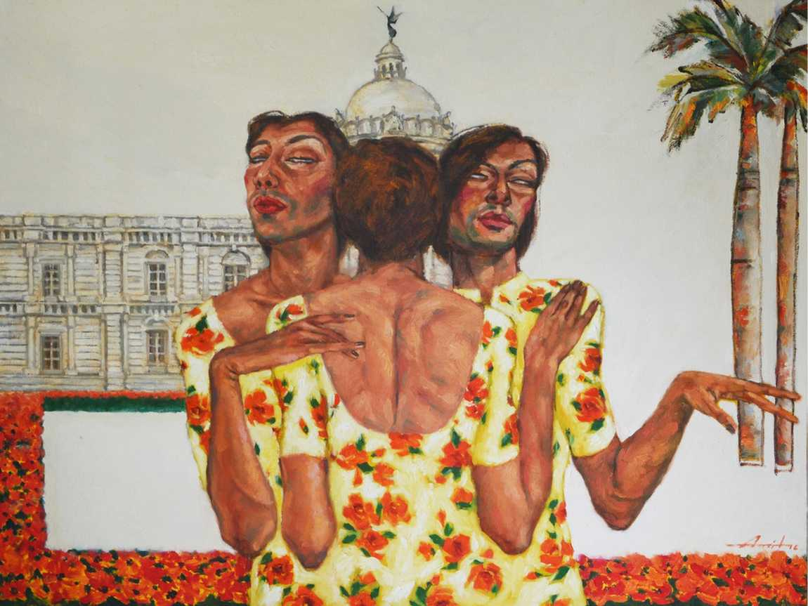

Amit Kumar Saha
Amit Kumar Saha focuses in his paintings on human figures in general and transgender figures in particular.
His works delve into and empathetically depict the complex emotions and embattled lives of the transgender
subjects who, though historically an integral part of Indian society and culture, are seldom recognized as
such and rather treated with ambivalence at best and rejection at worst. Pushed to the peripheries of the
civil society and eking out a living in the harshest conditions, in the face of public fear, revulsion, and
ridicule, they have heroically struggled to carve out a niche for themselves in this brutally indifferent
world with atypical and exemplary pride, boldness, dignity and confidence. Sahas paintings thus bring forth
their zest for life and quest for respect and acceptance against all odds.
Dil Garden Ho Gaya/ On My way

Dil garden ho gaya - 'Dil Garden Ho Gaya', Amit Kumar Saha ,
2017
Medium - oil on Canvas
Dimensions - 36" X 54"
2015
The work depicts three distinctly gendered subjects---a man in the centre, a transgender to his left and
a woman to his right---seated in a rickshaw with the Red Fort of Delhi in the distant background. Their
gender identity is suggested by their accentuated physical features: the man's muscular physique, beard
and moustache; the woman's long slender neck, prominent breasts and high cheek bones; and the transgender
passenger's stout physique, thick neck, 'masculine' facial texture and hands, large hips and absence of
visible breasts. While bodily features distinguish the latter two, 'feminine' clothes of both mark them
from the man. The man at the centre represents the male-centric society, where the male 'gaze'
(apparently concealed by sunshades here) sexually objectifies the women and the transgender people.
The woman and the transgender subject have half-closed eyes and sit slightly sideways away from the man,
as if averting or ignoring his possible gaze, while he simultaneously appears to be looking straight,
as if confronting and discomfiting the viewer with a steady gaze behind the sunglasses, thereby suggesting
the 'unsettling' effect the male gaze has over its female and transgender objects.
Together, Alone
Together, Alone , Amit Kumar Saha ,
2018
Medium - oil on Canvas
Dimensions - 40" X 69"
2018
The work depicts two sleeping nude transgender figures and a cat lying beside them. Strips of white
covering the bosom of one of the figures and the lower part of the cat, as well as the sheet covering the
lower halves of their bodies, do not so much conceal as hint at the (trans)gender identity of the subjects
as well as their pet. The legs of each, one bare and the other covered by socks---symbolic of
maleness---also indicate their androgyny. The serene expression of the two, together with the floral
patterns on the white sheets all around and over them, suggests that they are at peace with themselves
(at least in sleep), dreaming a life of hope and promise. Yet their emaciated bodies, with tonal
variations suggestive of numerous marks or scars, show their weariness from the day-day existential
struggle in a cruel world. Nevertheless, their togetherness---fostered by a sense of belongingness to
their distinct, marginalized community---amidst their social loneliness provides them succor and fortitude
to battle through their lives.
Reflection of Ardor
Reflection of Ardor , Amit Kumar Saha ,
2018
Medium - oil on Mirror
Dimensions - 16.5" X 12.5" X 7
2018
This work depicts a series of seven mirrors reflecting the roles that transgender people can play or
aspire to play. While they are consigned to the periphery of the 'civil' society and often reduced to
eking out their living as beggars, street-entertainers and sex-workers, they can achieve far more than
the society deems them fit for. The work is an expression of hope and promise that life holds out for
them, if they are allowed the opportunity to realize their dreams, and the dignity to live as human
beings. The mirrors reflect the ardor with which they can overcome the gender binaries that locate them
outside the 'neat' categories of 'man' and 'woman', rather outside the gender-stratified society.
The images of their beaming faces with half-closed eyes, as if oblivious to the social conventions of
gender roles, exude confidence in and complacence with their varied roles such as that of a bride or
danseuse that is suggested by their elaborate attires and jewelry. The flowers in the background signal
the blissful ambience in which they lead their fulfilling lives.
Fe-Male-Fusion
Fe-Male-Fusion , Amit Kumar Saha ,
2015
Medium - oil on canvas
Dimensions - 36" X 48"
2015
The work with a revealing hyphenated title depicts three fashionably dressed transgender subjects
apparently posing for a photograph in a restaurant. The 'masculine' texture of their faces with a
hint of moustache; their long, slender, slim-fingered 'feminine' arms; their striking 'feminine'
poses and make-up; and, of course, their 'feminine' dresses---all reveal their gender ambiguity.
Their bright, colorful apparel, together with their stylish postures and serene expressions,
exudes at once the composure, flamboyance, ease, and confidence with which they carry themselves
in public places, deliberately disregarding, even defying, the curious, mocking, or disrespectful
public gaze they are constantly subject to. The otherwise empty restaurant may suggest the social
isolation and rejection that as much marks their lives as brings out their distinctive composite
androgynous identity in a world of gender binaries.
Intimate
Intimate , Amit Kumar Saha ,
2016
Medium - oil on canvas
Dimensions - 66" X 36"
2016
This painting depicts two standing transgender figures, one embracing the other. Their identical
clothes, together with their bodily appearance, highlight their shared gender ambiguity, while their
embrace suggests an intimacy borne out of their common identity. Their brightly colored and
floral-patterned dresses, stylish stilettos, kohl-lined eyes, shapely eyebrows, rouged cheeks,
painted lips and fingernails, photographic poses, and a hint of smile on their faces---all indicate
that they take delight in adorning and beautifying their bodies that are otherwise rejected as aberrant
and flawed by the society. Underlying this desire to look attractive is also a sense of comfort and ease
with their distinctly gendered bodies (and selves), as reflected in their expressive faces that are also
lit by hope and promise. Yet the scars of life-struggle against social ridicule and rejection are
ill-concealed in their rough hands and feet; the bare wall in the background as much signals their
loneliness as focuses the viewer's attention on them. Nevertheless, their intimacy provides the bulwark
of mutual support against the trials and tribulations of life.
Embrance

Embrance , Amit Kumar Saha ,
2016
Medium - oil on canvas
Dimensions - 36" X 48"
2016
As the title, a combination of 'embrace' and 'trance', suggests, the work depicts three identically
dressed, entranced transgender subjects embracing each other to the point of being fused into a
composite whole. The two figures on the right and left with their smug, dreamy, half-conscious looks,
and the central figure with its face turned away from the viewer suggest that they are at once
unaffected by, even defiantly indifferent to, the social rejection that they face. On the left side
of the background, the partial view of Victoria Memorial, the iconic colonial-era building that often
defines the bustling cityscape of Kolkata, may represent the urban social world that they inhabit. Yet
the missing other half of this edifice on the right and the missing crowd on its sprawling lawns leaves
an empty, unpeopled space that suggests that this world where they are alienated is virtually
non-existent for them, or is seen as such by them. They are simultaneously within and outside this
world----in an existential limbo that mirrors their own gender indeterminacy. On the other hand, their
tight embrace and identical clothes represents their small, exclusive, close-knit community where they
find solace and support.